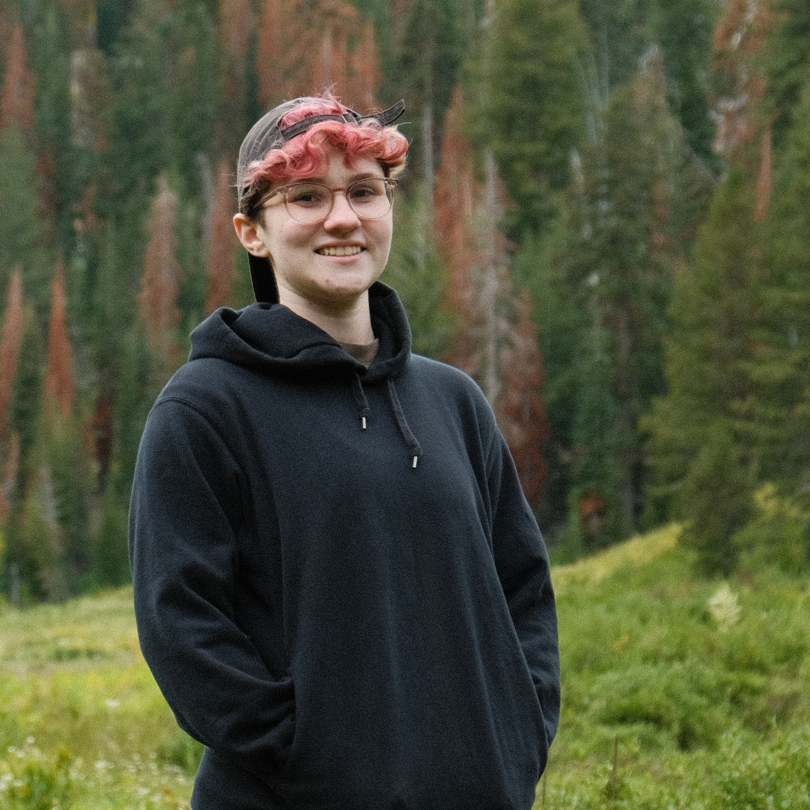

this website supports vim keybindings! use j/k to scroll up/down and h/l to go to the next/previous page.

alex bellon
(aka "balex")
I am a third year PhD student in the CSE department at UC San Diego, advised by Deian Stefan and Pat Pannuto. I'm primarily interested in the security of high risk systems and embedded devices. My research ranges from reverse engineering firmware from embedded devices to measuring the performance and reliability of IoT networks.
I graduated from UT Austin in 2021 with degrees in CS and Mathematics, where I was very involved in the security community. I served as president of UT's cybersecurity organization, Information and Systems Society (ISSS), where I wrote CTF challenges for the CTFs that we hosted and gave talks about security topics like cryptography, data forensics, and more. I also served as captain of UT's Collegiate Cyber Defense Competition (CCDC) and Collegiate Penetration Testing Competition (CPTC) teams (where we made it to the 2021 Nationals for CCDC!).
I used to serve as the VP of Web/Tech for UT's ACM chapter, where I started mulitple different initiatives to make computer science more accessible for new CS majors. I also used to attend a lot of hackathons.
Outside of computers, I enjoy trivia, lifting, bouldering, reading (mostly non-fiction), playing video games, photography and drawing. I also love the performing arts, and see every show I can at the La Jolla Playhouse and the San Diego Civic Theatre (and Bass Concert Hall in undergrad). I also used to play Quidditch (yes, really) for UT's club team!